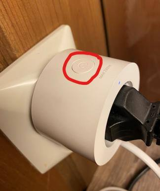
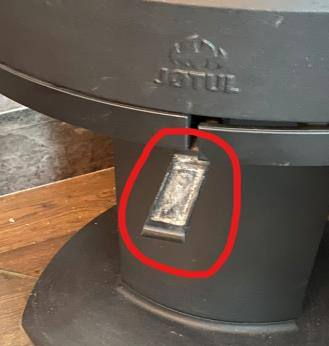
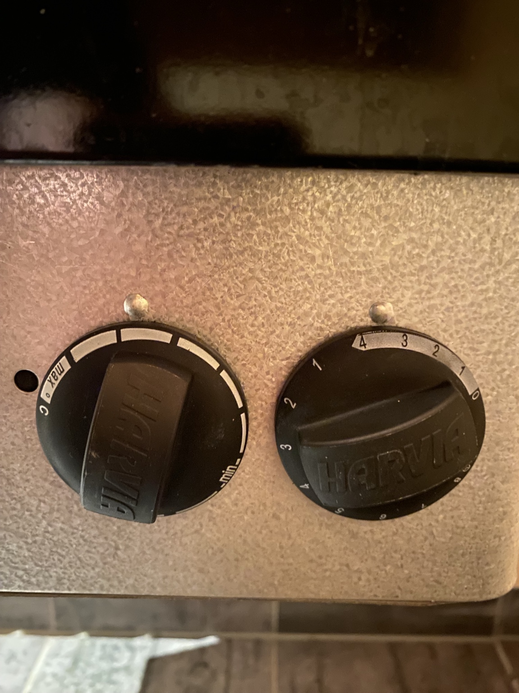
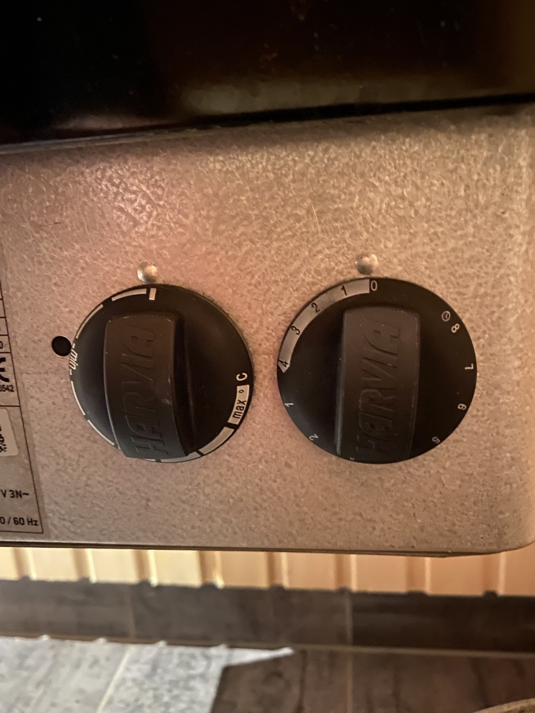
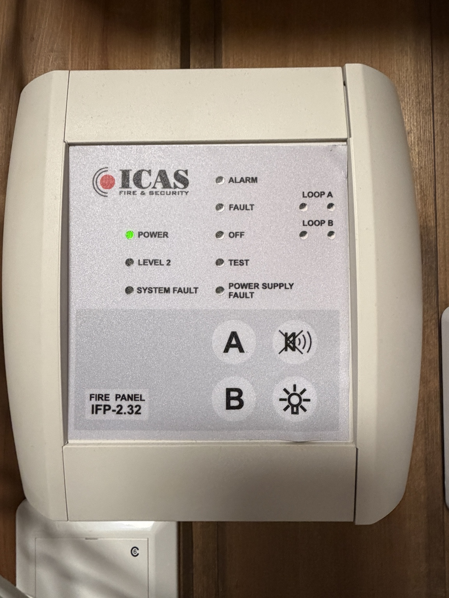
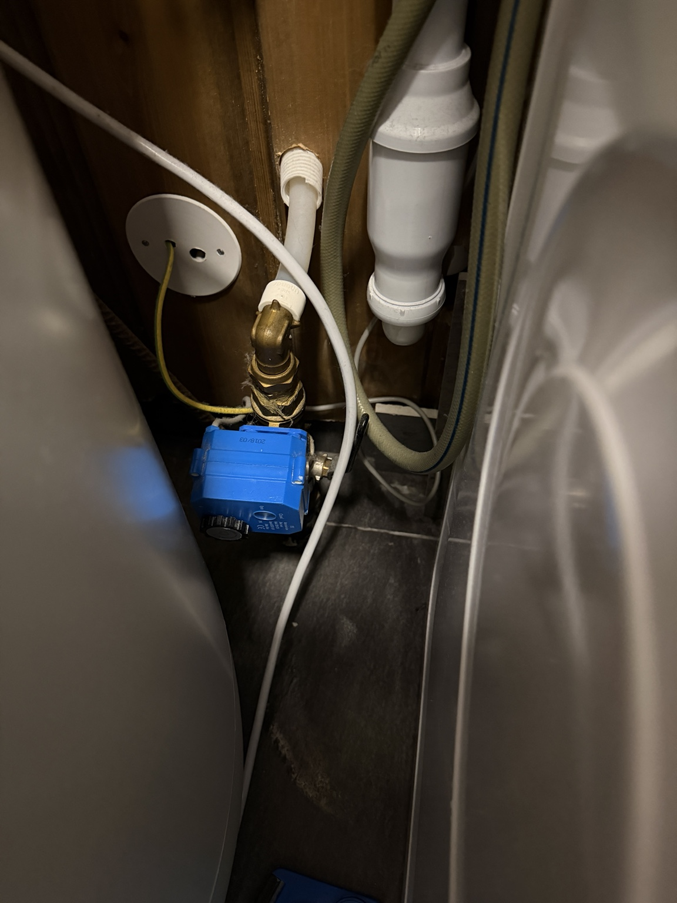
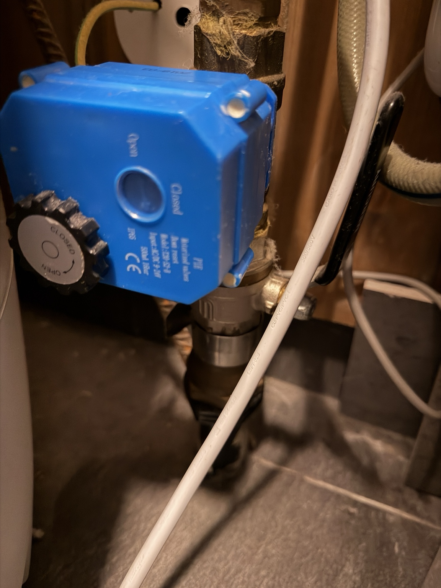
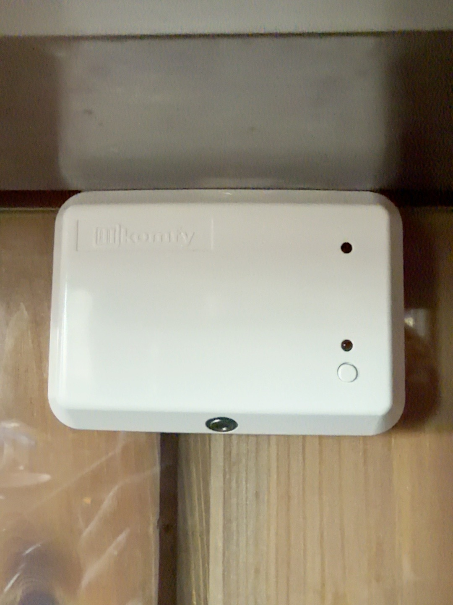

Praktisk informasjon
Når noe ikke virker
Praktisk informasjon
WiFi
Nettverk:
Hestegroavegen 64_Guest
WiFi-passordet sendes sammen med innsjekkingsinformasjonen før ankomst.
Sengetøy og håndklær
Et sett koster 150 kr og inneholder laken, putevar, dynetrekk og håndklær. Bestill ved å gi oss beskjed via Airbnb så tidlig som mulig. Sengetøyet legges klart, men sengene blir ikke redd opp, slik at dere selv kan velge hvilke senger dere vil bruke.
150 kr / settVi har kun enkeltdyner, også i dobbeltsengene.
Tar dere med egne laken? Her er bredden på sengene i hvert rom.
| Rom | Senger og bredde |
|---|---|
| Rom 1 · 1. etasje | Dobbeltseng: 180 cm |
| Rom 2 · 1. etasje | Køyeseng: 150 og 90 cm |
| Rom 3 · 2. etasje | Dobbeltseng: 150 cm. Rommet har utgang til balkong. |
| Rom 4 · 2. etasje | Dobbeltseng: 150 cm. Enkeltseng: 90 cm. |
Barneseng er tilgjengelig. Dyne og sengetøy til barnesengen må dere ta med selv; dette kan ikke leies.
Kaffetrakter
Kaffetrakter
Får du ikke strøm på kaffetrakteren? Trykk på knappen på stikkontakten. Strømmen kobles automatisk ut igjen etter omtrent 30 minutter.

Peis
Før du fyrer i peisen

Badstue
Badstue
Slik bruker du badstuen
Betjeningen består av to brytere: temperatur til venstre og tidsur til høyre. Det er enklest å holde seg til det hvite feltet på tidsuret.
Bryteren til venstre regulerer temperaturen. Jo bredere den hvite markeringen er, desto varmere blir badstuen.
Bryteren til høyre bestemmer hvor lenge badstuen skal varme. Vri den inn i det hvite feltet for å starte oppvarmingen med en gang.
Hvis tidsuret dreies videre inn i det svarte feltet, starter ikke oppvarmingen før bryteren senere kommer inn i det hvite feltet. Vi anbefaler derfor å bruke det hvite feltet.
Sett begge bryterne tilbake i avslått posisjon, slik som på bildet merket «Avslått».
Når badstuen er i bruk
- Bruk alltid et håndkle å sitte på.
- Bruk kun rent vann på badstuesteinene – ikke oljer, såpe eller andre væsker.
- Vær til stede mens badstuen er i drift.
- Kontroller at begge bryterne står på avslått når dere er ferdige.


Søppel
Bruk kartlenken for å finne søppelstasjonen. Det er sortering for matavfall, plast, papp og restavfall.
Husregler
Røyking
Røyking er ikke tillatt inne i hytta.
Husdyr
Husdyr skal ikke være i senger eller sofaer.
Ro
Ta hensyn til naboene og begrens støy etter kl. 23:00.
Snø
Ved snøfall setter vi pris på om dere måker trappen slik at den er trygg å bruke.
Hvis noe skjer
Gi oss beskjed dersom noe blir ødelagt eller skadet under oppholdet.
Parkering
Bruk kun de to plassene merket 64. De øvrige plassene tilhører naboene.
Sikkerhetsutstyr
Hvis brannalarmen går
Brannsentralen står på vaskerommet. Anlegget gjelder bare denne hytta.
Få alle ut av hytta. Ved mistanke om brann, ring 110. Ikke bruk tid på å betjene sentralen. Hvis alarmen høres og årsaken er ukjent, gå ut av hytta.
Ved en bekreftet feilalarm, for eksempel matos
- Stopp det som lager røyk, og luft godt ut.
- Trykk på knappen med overstrøket høyttaler, øverst til høyre blant de fire knappene, for å avstille alarmlyden. Knappen stopper ikke nødvendigvis alle sirenene.
- Tilbakestill bare når røyken er borte, dere har kontrollert at det ikke brenner, og dere tydelig ser rødt alarmlys ved LOOP A eller LOOP B.

Hvis ingen av disse viser alarm, eller lysene ikke samsvarer med beskrivelsen, skal dere ikke fortsette med knappesekvensen. Gi oss beskjed, slik at vi kan sørge for at anlegget blir undersøkt. Ikke koble fra strømmen eller røykvarslerne.
Tilbakestille etter en bekreftet feilalarm
Se hvilken sløyfe som viser rødt alarmlys: LOOP A eller LOOP B. Trykk A og B samtidig til LEVEL 2 lyser. Slipp knappene.
LOOP A
- Hold A inne.
- Trykk B én gang, slik at ALARM blinker. Fortsett å holde A inne.
- Trykk én gang på lyspæresymbolet nederst til høyre.
- Slipp A. Alarmlampen for LOOP A skal slukke.
LOOP B
- Hold B inne.
- Trykk A én gang, slik at ALARM blinker. Fortsett å holde B inne.
- Trykk én gang på lyspæresymbolet nederst til høyre.
- Slipp B. Alarmlampen for LOOP B skal slukke.
Hvis alarmen fortsetter eller kommer tilbake, skal dere ikke gjenta tilbakestillingen. Vurder situasjonen på nytt og gi oss beskjed. Ved ukjent årsak, gå ut. Ved mistanke om brann, ring 110.
Gi oss beskjed hvis alarmen har gått, også om dere får tilbakestilt den. Ved feillamper eller annen piping fra sentralen: gi oss beskjed, slik at vi kan ordne oppfølging. Ikke koble ut røykvarslerne eller strømmen til anlegget.
Gi oss beskjedBrannslukker
I skapet i gangen.
Førstehjelpsutstyr
I skuffen på badet nede.
Når noe ikke virker
Ikke vann i kranene?
Vannet skal åpnes automatisk når dere låser opp ytterdøren. Hvis det ikke kommer vann, følg punktene under.
- Sjekk for lekkasje først
Se etter vann eller fukt på gulvet ved oppvaskmaskinen og på vaskerommet. Ved vann, lekkasjetegn, alarm eller usikkerhet: Ikke åpne ventilen. Kontakt oss med en gang.
- Finn ventilen
Hvis alt er tørt og det ikke er alarm, finn den blå ventilen mellom vaskemaskinen og varmtvannsberederen på vaskerommet. Den står litt vanskelig til. Kontakt oss hvis dere ikke kommer til uten å flytte maskiner eller dra i rør og ledninger.

Ventilen mellom vaskemaskinen og varmtvannsberederen. - Åpne manuelt
Trekk det svarte hjulet ut og drei det med klokken, i pilens retning mot OPEN. Stopp når indikatoren i det lille vinduet viser OPEN. Ikke bruk makt.

Trekk ut det svarte hjulet og drei mot OPEN. - Gi oss beskjed med en gang
Gi oss alltid beskjed hvis dere har åpnet ventilen manuelt, også om vannet virker igjen. Manuell åpning kan sette den automatiske lekkasjestengingen ut av funksjon. Hjulet skal ikke stå ute ved normal drift; vi hjelper dere å sette systemet tilbake.
Platetopp og komfyrvakt
Komfyrvakten varsler hvis det blir for varmt på platetoppen. Bruk den runde, hvite knappen nederst til høyre på sensoren over platetoppen.

- Ved varmealarm
Sjekk kokekarene og reduser varmen. Hvis dere har kontroll på situasjonen, trykk kort på knappen. Det gir fem minutter til å få temperaturen ned.
- Hvis platetoppen slår seg av
Komfyrvakten kan kutte strømmen dersom alarmen ikke håndteres. Slå av kokesonene og sørg for at situasjonen er trygg. Trykk så kort på samme knapp for å koble inn strømmen igjen.
Virker platetoppen fortsatt ikke, eller kommer alarmen tilbake? Kontakt oss. Enheten i hjørneskapet ved siden av komfyren trenger dere ikke betjene.
Kontakt oss